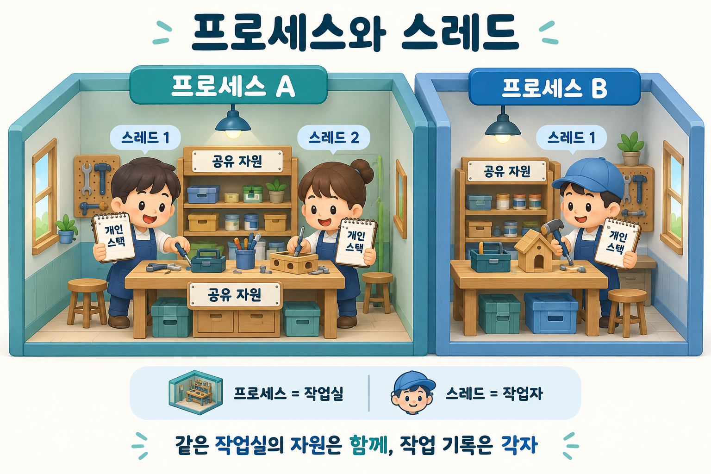

프로세스와 스레드는 무엇이 다르고, 같은 프로세스의 스레드끼리는 어떤 자원을 공유하나요?
짧은 답변
프로세스는 실행 중인 프로그램의 자원과 주소 공간을 묶는 단위이고, 스레드는 그 안에서 실행되는 흐름입니다. 같은 프로세스의 스레드는 코드·데이터·힙 등의 주소 공간을 공유하지만, 각자 실행 위치와 레지스터 상태, 스택을 가집니다.
더 알아보기
공간과 실행 흐름을 나누어 생각하기
프로세스를 작업실, 스레드를 작업실에서 일하는 작업자로 생각해 보세요. 같은 작업실의 작업자들은 공용 자료를 함께 쓰지만, 현재 맡은 작업과 작업 순서는 서로 다릅니다. 별도 프로세스는 기본적으로 주소 공간이 분리되며, 데이터를 주고받으려면 파이프·소켓·공유 메모리 같은 통신 방법이 필요합니다.
공유는 편리하지만 조정이 필요해요
같은 프로세스의 두 스레드가 하나의 주문 목록을 처리한다면, 목록을 복사하지 않고 함께 사용할 수 있습니다. 대신 같은 항목을 동시에 수정할 때는 락 등으로 접근을 조정해야 합니다. 스레드별 스택이 있다는 것은 호출 상태를 따로 관리한다는 뜻이며, 스택이 프로세스 안에서 보안상 격리된다는 뜻은 아닙니다.

작업실은 프로세스, 작업자는 스레드, 공용 도구는 공유 자원, 개인 작업 노트는 각 스레드의 스택에 대응하는 비유입니다.
기억할 점
스레드를 여러 개 만든다고 반드시 빨라지지는 않습니다. 사용 가능한 CPU 코어, 작업의 성격, 동기화 비용에 따라 달라집니다.